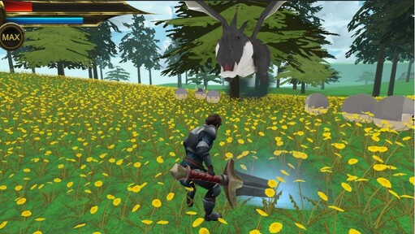

SHADOW FOREST
ゲーム画面サンプル

メモ
Unityでの個人製作の第一作です。簡易的な3DアクションRPGです。次のチーム制作ではスクリプト管理による操作性の向上などに取り組んでいます。
操作/ゲーム性
キーボード：
[W]上
[A]左 [S]下 [D]右
[ I ]攻撃
[H]魔法態勢 [J]左パン [K]ジャンプ [L]右パン [ ; ]ダッシュ
マウス：
右ドラッグでカメラ視点
ゲームパッド：
左スティック：移動
ボタン１：攻撃
ボタン２：魔法態勢
ボタン３：ダッシュ
ボタン４：ジャンプ
ボタン５：カメラ左パン
ボタン６：カメラ右パン
魔法態勢（剣が光っている状態）で攻撃するとブルーゲージが足りていたら炸裂魔法弾を発射。
ブルーゲージは時間経過で回復有。
レッドゲージはLvアップ時上昇分とINNのみで回復。
町に近づくとドラゴン以外のモンスターは消えます。
黒いモヤはモンスターの出現するポイント。
レッドゲージがゼロになるとGAME OVERで最初から。
ドラゴンを倒すと演出がありますがクリアは設定されていません。
INN以外、町やフィールドのオブジェクトにイベントは設定されていません。
キーボード矢印の↑↑↓↓←→←→、そしてBAを素早く入力するとMaxLvになります。
避けるより殴り合ってINNでこまめに回復、巨人には魔法は効きにくいです。